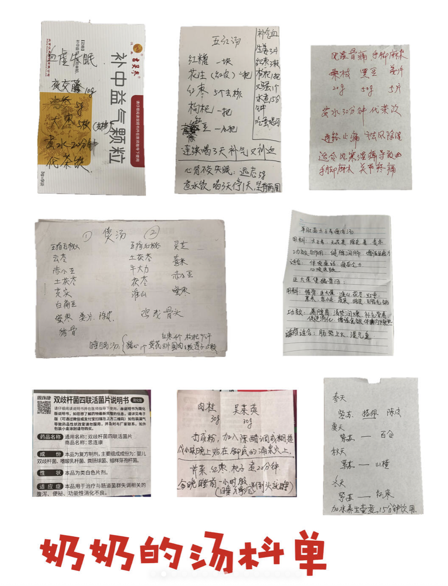
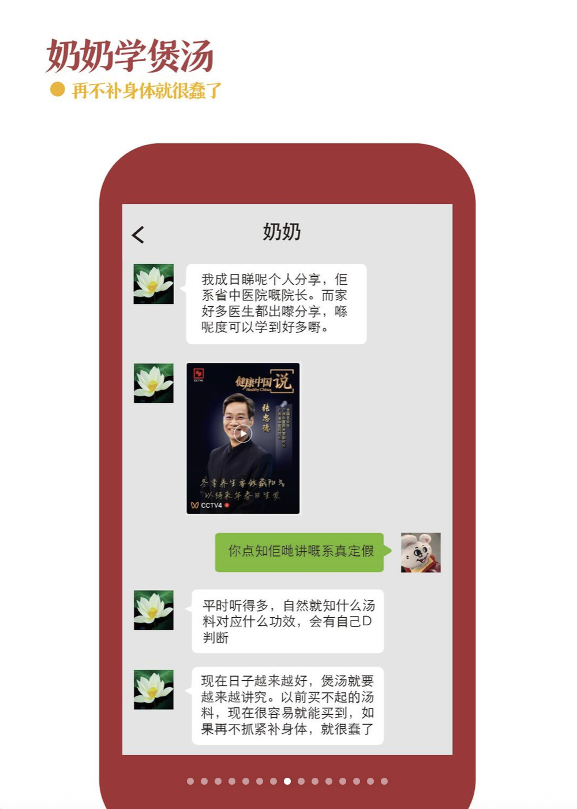
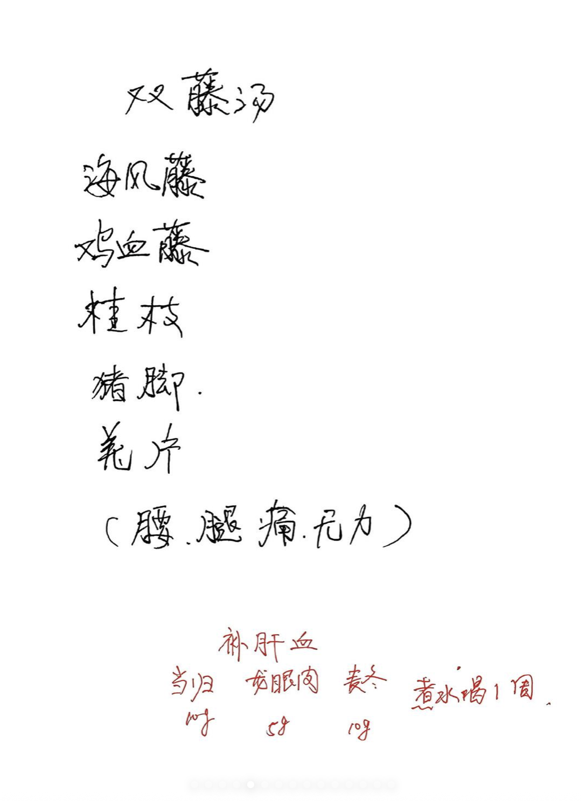
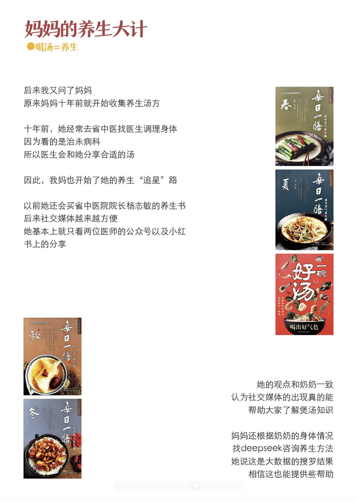
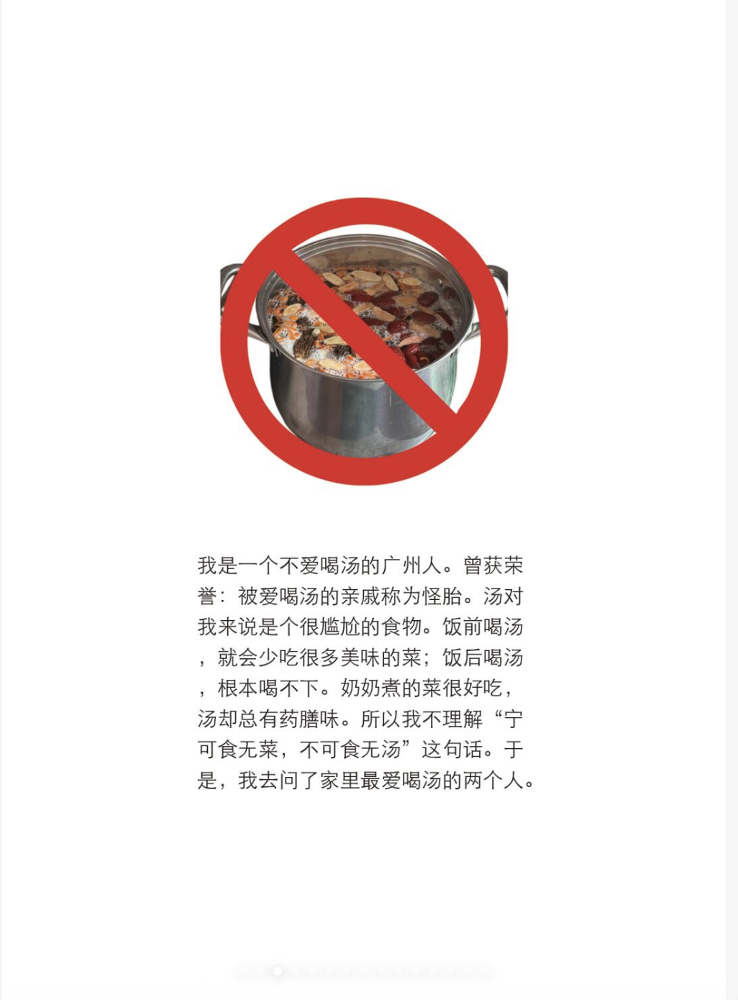
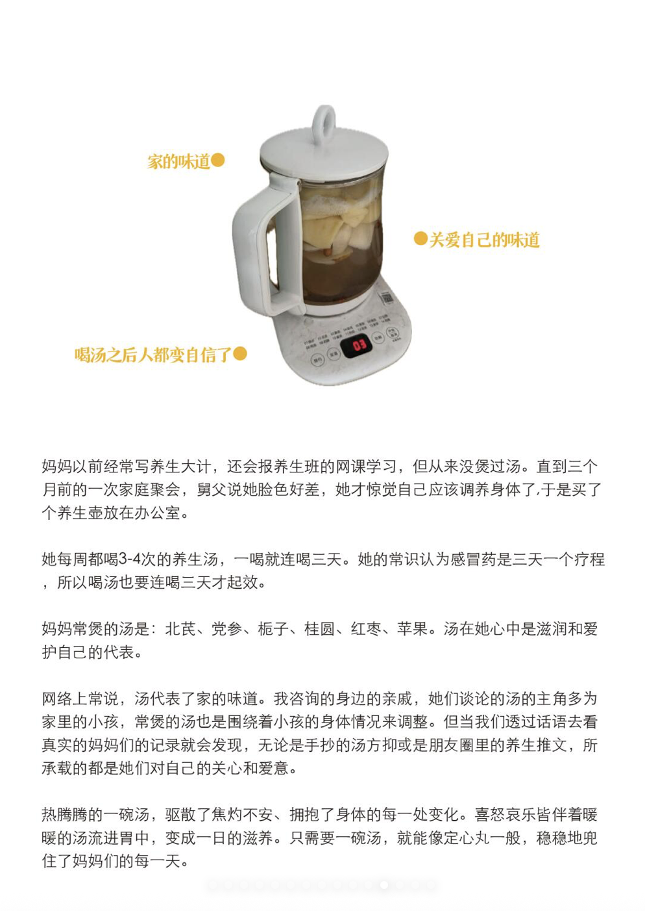

《妈妈汤》
一本从家庭餐桌开始的田野 Zine。我从“一个不爱喝汤的广州人”出发，回到家里听妈妈、奶奶和爸爸讲汤，也试着理解一碗汤里装着的健康观念、照料与家人之间的牵挂。
我不爱喝汤，
但家里总有人在煲。
在广州家庭里，汤常常不只是饭桌上的一道菜。它会以“对身体好”“最近要补一补”这样的理由出现，也会随着季节、身体状况和家人的经验不断变化。
这本 Zine 的起点，是我和家人对汤的不同感受。我没有先替汤下定义，而是从家里最熟悉的日常开始，问问每个人：你为什么煲汤？又是从谁那里学会的？
把家人当作田野，
把熟悉的事重新问一遍。
访谈、翻看家里的汤谱和日常记录，让同一碗汤出现不同的讲法。它们并不总是完全一致，而正是这些差异，让家庭经验变得具体。

奶奶：经验会跟着身体一起变
奶奶是家里常年掌勺的人。她的煲汤经验不只来自食谱，也来自身体状态、生活变化和日积月累的尝试。那些“喝汤比吃药好”的说法，既是她的生活信念，也是她照看家人的方式。

妈妈：把养生变成一项日常功课
妈妈会记下汤方、查看健康信息，也会把看到的方法带回厨房。煲汤是她理解“照顾好自己和家人”的一种实践；网络上的信息，则成为她不断学习、比较和判断的材料。

爸爸：家里也有“不太相信”的声音
爸爸对汤的看法和妈妈、奶奶并不完全一样。他的质疑让这个故事多了一点摩擦：汤到底有没有用，谁来决定什么是“为你好”？这些分歧也让家庭里的关心显出不同的形状。

汤的背后，
还有谁一直在照料？
整理材料时，我开始注意到：煲汤既是味道和配方，也是家庭里反复发生的劳动。谁记得该买什么、谁守着火候、谁留意别人的身体——这些细小的动作，让“为你好”有了具体的形状。
而照料并不只有单向付出。学汤、试汤、分享经验，也可能成为女性重新理解身体、获得成就感与主动权的一部分。这些故事让我看到，家常汤水里既有温柔，也有值得继续追问的家庭分工。
“熟悉的家常事，也值得认真地看一遍。”
访谈、记录，再把材料编成一本书。
我把口述故事、汤谱、手写清单与身体经验并置，让不同人的声音彼此回应。Zine 的阅读像一次翻看家庭抽屉：有回忆、有方法，也留着没有被统一的答案。



形式 小志 Zine / 尺寸 12.5 × 17.6 cm、14.8 × 21 cm / 装订 单圈装订与夹子装订